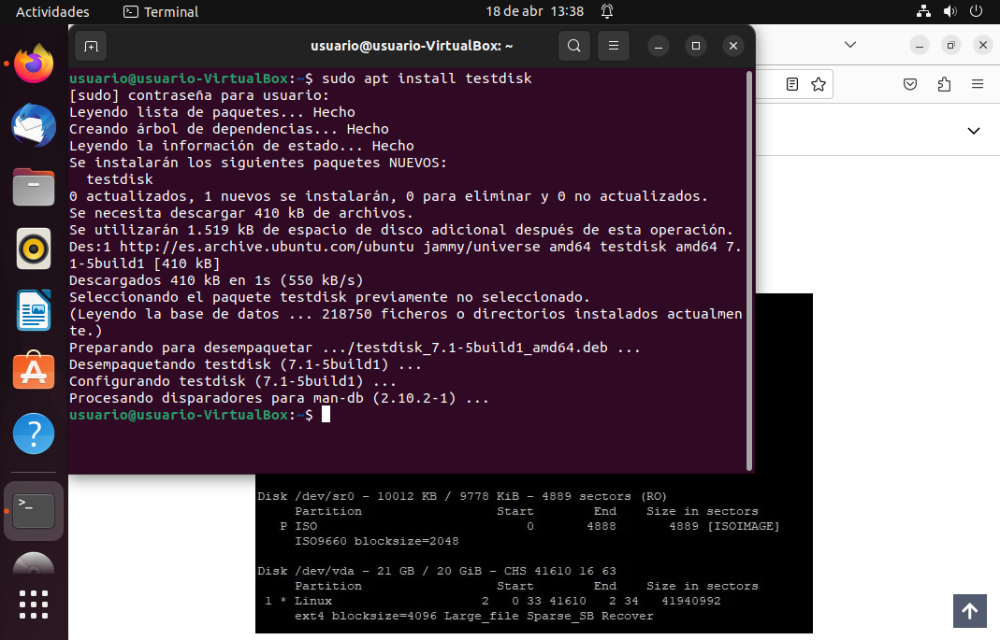
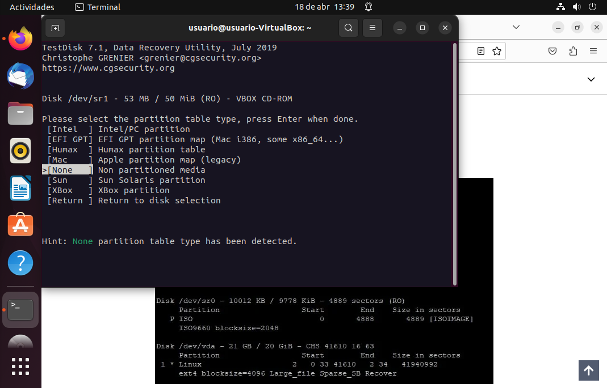
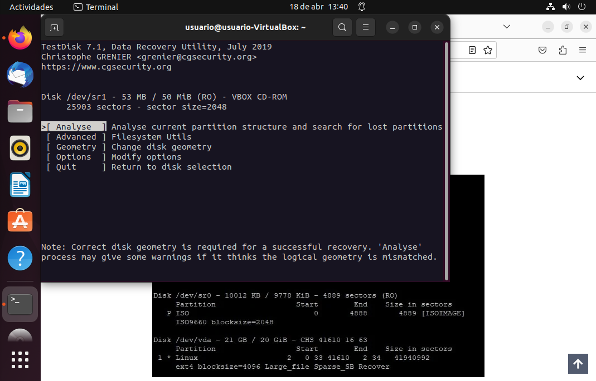
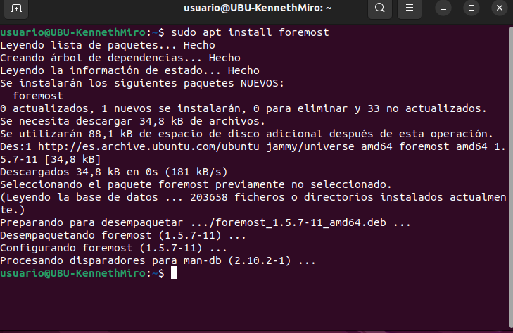
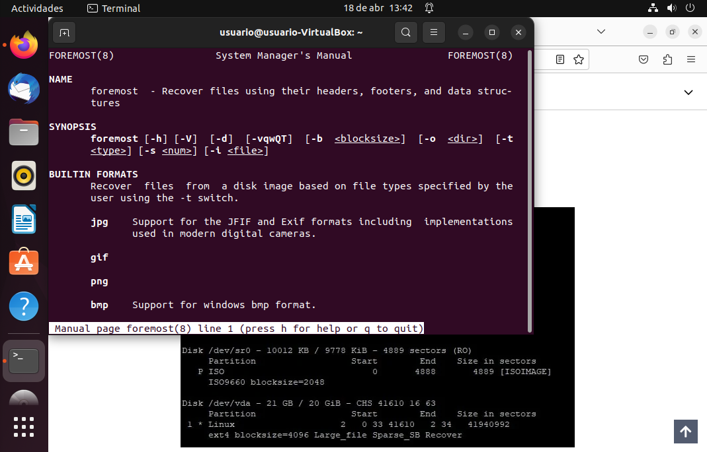

A diferencia de con los otros tipos de Software, aquí hay opciones de sobra en Ubuntu. Bueno, en Linux en general. De hecho, hay sistemas operativos enteros basados en Linux con la única función de recuperar sistemas de archivos, puesto que Linux es un Sistema Operativo especialmente eficiente para ello. No obstante, la mayoría de estas opciones son para usuarios avanzados o bien un SO entero. Así pues, ¿de qué opciones dispone un usuario novicio? Pues, por desgracia, no tantas. Solo una pequeña porción.
Sin embargo, todas las que he encontrado se usan desde interfaz en terminal. Las dos que más me han interesado son: Foremost y TestDisk, siendo la primera un comando ejecutable muy potente y la segunda una aplicación de terminal interactiva.
| PROGRAMA DE RECUPERACIÓN | FOREMOST | TESTDISK |
|---|---|---|
| Pros |
|
|
| Contras |
|
|
Una de las ventajas de Ubuntu (y las distribuciones Linux en general) sobre Windows, es que prácticamente todo se instala desde la terminal. Además Ubuntu, que está muy enfocada a usuarios novicios, lo tiene aún más fácil que otras distros.
Para realizar la instalación, primero abrimos la terminal. Podemos hacerlo con ctrl+alt+t o bien con click derecho y abrir terminal aquí. Hay otras formas, pero estas son las más fáciles y rápidas.
Con la terminal abierta, escribimos: sudo apt update si no lo hemos hecho antes. Nos pedirá la contraseña, la introducimos y pulsamos S o Y en función del idioma de nuestro sistema. Cuando el proceso acabe escribimos sudo apt install testdisk.
Y ya está instalado. Ahora podemos ejecutarlo. Adjunto un par de imágenes de los menús más interesantes de TestDisk pero tiene muchos más, algunos difíciles de acceder. El uso adecuado de este programa es demasiado complejo para explicarlo aquí ahora.
 Con la terminal abierta, escribimos: sudo apt update si no lo hemos hecho antes. Nos pedirá la contraseña, la introducimos y pulsamos S o Y en función del idioma de nuestro sistema. Cuando el proceso acabe escribimos sudo apt install foremost.
Una vez termine tendremos la utilidad instalada. Foremost es un comando, así que para usarlo tendremos que saber su sintaxis. Podremos verla con man foremost.
